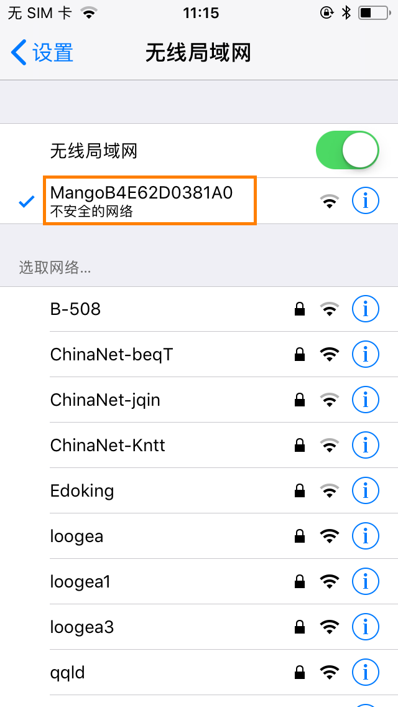
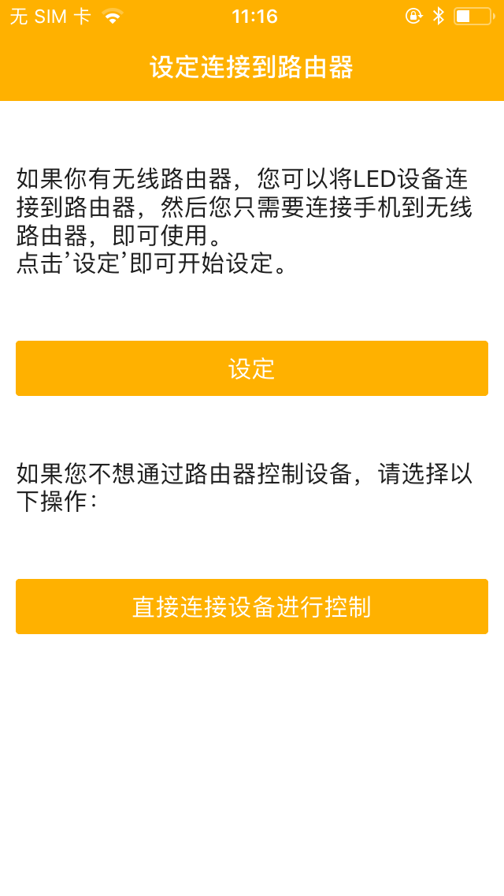

芒果智能led炫彩灯带
| 色彩模式: | RGB/单色灯 | 工作温湿度: | -10~50°C/0%-85% |
| 控制类型: | 无线WiFi/按键 | 应用范围: | 家庭、表演、照明等 |
| 支持平台: | Android/iOS | 无线协议: | Wi-Fi IEEE802/11 b/g/n 2.4Ghz |
| 额定功率: | 144w | 输入电压电流: | DC5-15V/2-5A |
按住按键10秒恢复出厂设置（按住超过三秒时灯带关机，十秒后白色灯亮起
白灯亮起后，断开电源适配器，通电后恢复到出厂配置。
避免在潮湿高温下的环境使用
配网时尽量靠近路由器，避免因WiFi信号弱导致配网不成功！
灯带接上电源，并且亮灯，手机搜索并连接热点wifi：Mangoxxxxxxxxxxxx
打开APP，点击直接连接设备进行控制 ，即可直接控制。


扫描二维码下载
灯带接上电源，并且亮灯，手机搜索并连接热点wifi：Mangoxxxxxxxxxxxx
打开APP，点击设定，进入选择WiFi界面 ，点击更换网络选择用户可用的WiFi并输入WiFi正确的密码，点击连接。
配网成功后进入登录页面，进行注册账户。
| 非单色灯的配网灯光 | 单色灯的配网灯光 | |
|---|---|---|
| 配网中 | J白色呼吸灯 | 单色呼吸灯 |
| 配网成功 | 绿色灯保持1秒 | 单色灯保持1秒 |
| 配网失败 | 红色灯爆闪1秒 | 单色灯爆闪1秒/td> |
点击注册，进入注册页面输入用户邮箱以及邮箱密码点击注册完成注册，返回登录界面进行登录。
亦可使用第三方账号进行登录，直接点击以下微信或者脸书图标。
登录成功后，会进入我的设备界面，下拉空白处进行刷新，短按设备名称则进入设备控制页面，长按设备名称，点击绑定到我的芒果云即可绑定设备，也可进行修改设备名称，恢复出厂设置，解绑，以及删除设备等操作。
连接智能音箱